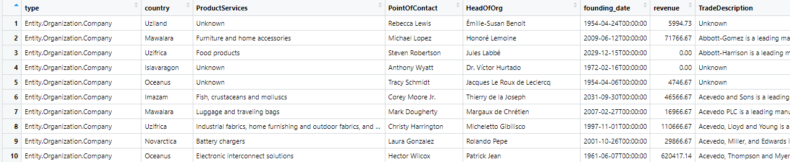
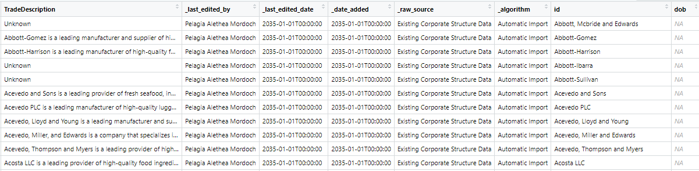
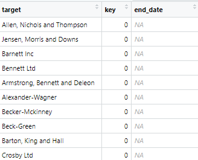
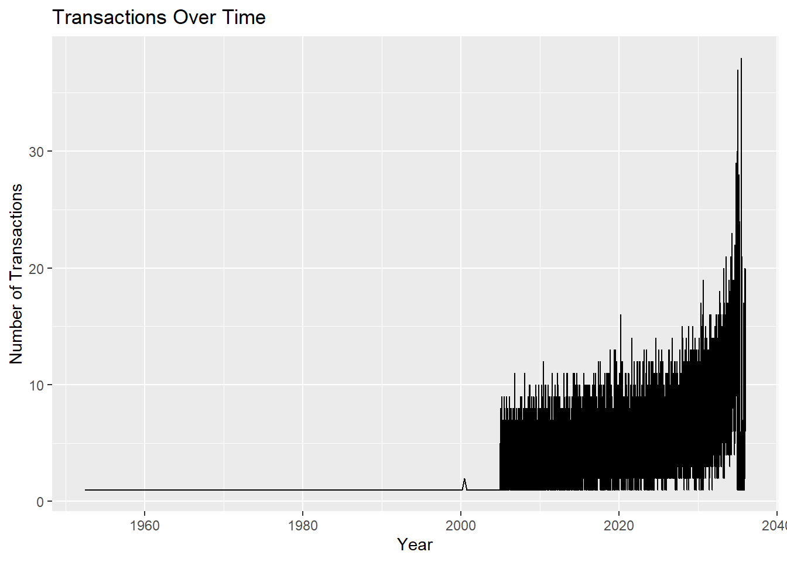
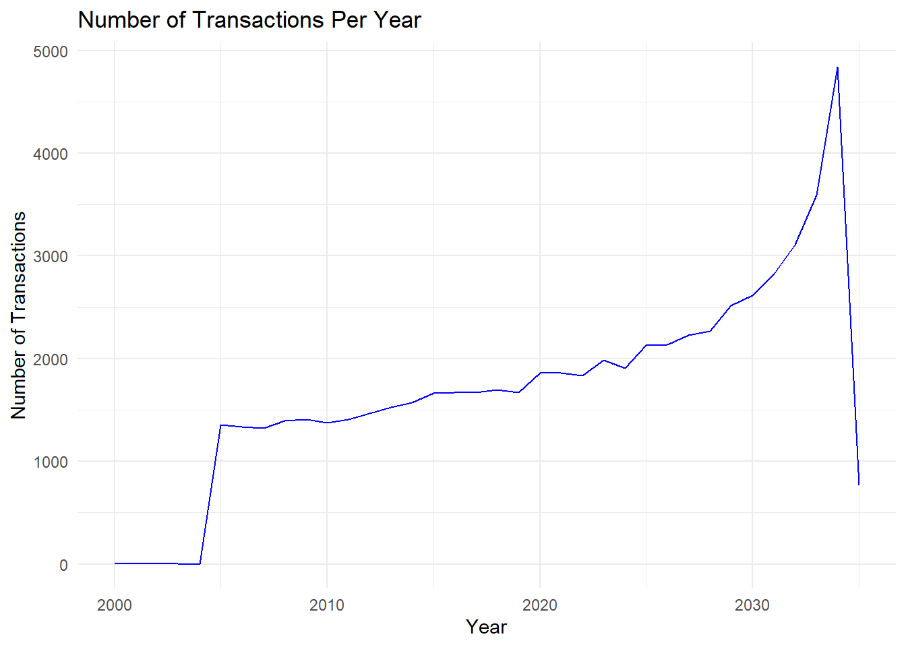
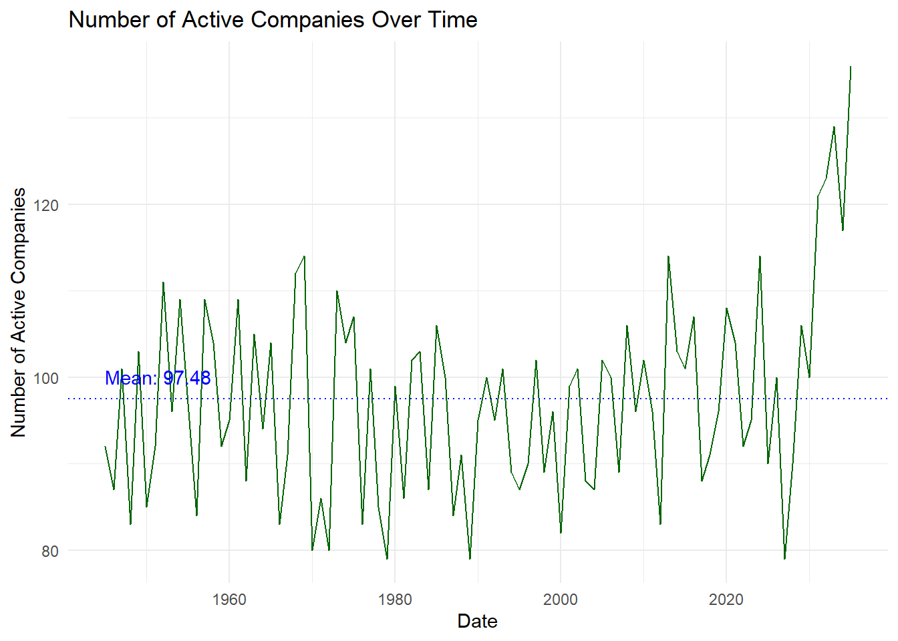
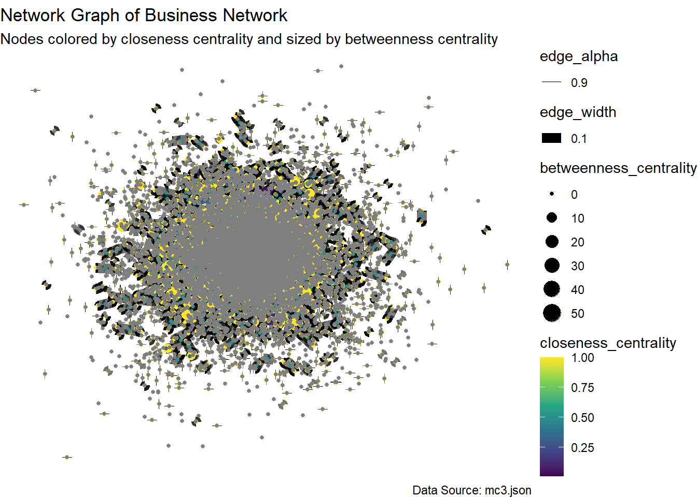
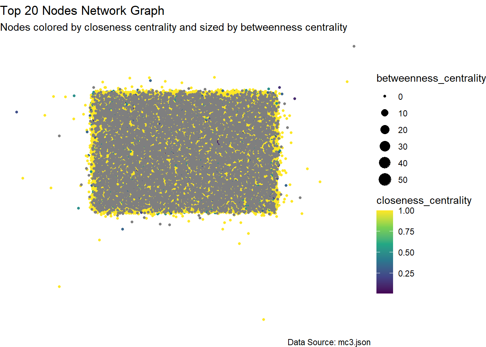
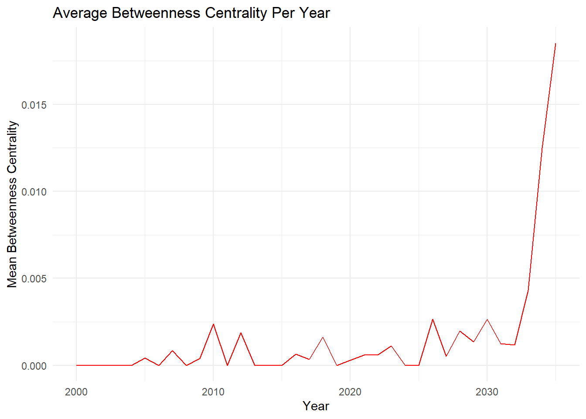
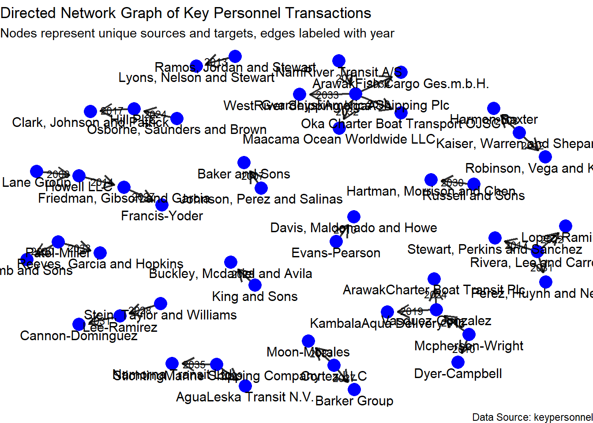

pacman::p_load(tidytext, readtext, quanteda, tidyverse, jsonlite, igraph, tidygraph, ggraph, visNetwork, clock, graphlayouts,plotly,ggiraph)Take-home Exercise 3 - Vast Challenge 2024
The Source
The task is taken from the VAST Challenge 2024. Questions from Mini Case 3: Temporal Analysis will be completed.
Challenge Overview


Welcome to Oceanus, an island nation with a healthy market for commercial fishing. Most companies in the region are united in following regulations and implementing sustainable fishing practices. But there are a few companies who are willing to cross ethical lines to increase their catch and their profits. Luckily, FishEye International maintains a watchful eye on fishing data. Their dedicated analysts have been processing data from various sources into a knowledge graph that they call CatchNet: the Oceanus Knowledge Graph.
The Task

Mini-challenge 3 concerns visualizing changes in business relationships within the commercial fishing industry. FishEye wants to understand how companies react to the closure of a competitor caught fishing illegally and how these changes affect influence networks. Design visualizations to show these changes over time and identify companies that may benefit from illegal fishing
Apply appropriate visual analytics methods to help FishEye, a non-profit organization that focuses on illegal fishing, to better identify bias, track behavior changes, and infer temporal patterns from the knowledge graphs prepared by their data analysts.
This take home exercise is done in conjunction with the group project. My group members are Keke and Quek You Ting.
Background
The business community in Oceanus is dynamic with new startups, mergers, acquisitions, and investments. FishEye International closely watches business records to keep tabs on commercial fishing operators. FishEye’s goal is to identify and prevent illegal fishing in the region’s sensitive marine ecosystem. Analysts are working with company records that show ownership, shareholders, transactions, and information about the typical products and services of each entity. FishEye’s analysts have a hybrid automated/manual process to transform the data into CatchNet: the Oceanus Knowledge Graph.
In the past year, Oceanus’s commercial fishing business community was rocked by the news that SouthSeafood Express Corp was caught fishing illegally. FishEye wants to understand temporal patterns and infer what may be happening in Oceanus’s fishing marketplace because of SouthSeafood Express Corp’s illegal behavior and eventual closure. The competitive nature of Oceanus’s fishing market may cause some businesses to react aggressively to capture SouthSeafood Express Corp’s business while other reactions may come from the awareness that illegal fishing does not go undetected and unpunished.
Tasks and Questions:
A key element in stopping illegal fishing is holding the people who own nefarious companies accountable. Thus, FishEye is keenly interested in developing visualization tools that work with CatchNet to identify the people who hold influence over business networks. That is especially difficult with varied and changing shareholder and ownership relationships.
- FishEye analysts want to better visualize changes in corporate structures over time. Create a visual analytics approach that analysts can use to highlight temporal patterns and changes in corporate structures. Examine the most active people and businesses using visual analytics.
Note: the VAST challenge is focused on visual analytics and graphical figures should be included with your response to each question. Please include a reasonable number of figures for each question (no more than about 6) and keep written responses as brief as possible (around 250 words per question). Participants are encouraged to new visual representations rather than relying on traditional or existing approaches.
Getting Started
Installing and loading the required libraries
Note: Ensure that the pacman package has already been installed.
The following R packages will be used:
tidytext
tidyverse
readtext
quanteda
jsonlite
igraph
tidygraph
ggraph
visNetwork
graphlayouts
plotly
ggiraph
Importing JSON File
Direct import of the mc3.json file shows an error message indicating that there’s an invalid character in the JSON text, specifically “NaN”. As “NaN” is not recognised as a valid value, preprocessing of the JSON file to replace “NaN” is required.
In the code chunk below, mc3.json is first imported, then all instances of “NaN” are replaced with “null”, and the processed file is written into a json file mc3_fixed.json for later use.
# Read the JSON file as text
json_text <- readLines("data/mc3.json")
# Replace "NaN" with "null"
json_text_fixed <- gsub("NaN", "null", json_text)
# Write the fixed JSON text back to a file
writeLines(json_text_fixed, "data/mc3_fixed.json")Importing preprocessed mc3_fixed.json file
mc3_data <- fromJSON("data/mc3_fixed.json")Check dataframe
Opens new tabs within R workspace, not shown in website
Example of the view is shown in the screenshot tab below
view(mc3_data[["nodes"]])
view(mc3_data[["links"]])mc3_data[[“nodes’]


mc3_data[[“links”]]


View dataframe
- Similar info as shown above
glimpse(mc3_data)List of 5
$ directed : logi TRUE
$ multigraph: logi TRUE
$ graph : Named list()
$ nodes :'data.frame': 60520 obs. of 15 variables:
..$ type : chr [1:60520] "Entity.Organization.Company" "Entity.Organization.Company" "Entity.Organization.Company" "Entity.Organization.Company" ...
..$ country : chr [1:60520] "Uziland" "Mawalara" "Uzifrica" "Islavaragon" ...
..$ ProductServices : chr [1:60520] "Unknown" "Furniture and home accessories" "Food products" "Unknown" ...
..$ PointOfContact : chr [1:60520] "Rebecca Lewis" "Michael Lopez" "Steven Robertson" "Anthony Wyatt" ...
..$ HeadOfOrg : chr [1:60520] "Émilie-Susan Benoit" "Honoré Lemoine" "Jules Labbé" "Dr. Víctor Hurtado" ...
..$ founding_date : chr [1:60520] "1954-04-24T00:00:00" "2009-06-12T00:00:00" "2029-12-15T00:00:00" "1972-02-16T00:00:00" ...
..$ revenue : num [1:60520] 5995 71767 0 0 4747 ...
..$ TradeDescription : chr [1:60520] "Unknown" "Abbott-Gomez is a leading manufacturer and supplier of high-quality furniture and home accessories, catering to"| __truncated__ "Abbott-Harrison is a leading manufacturer of high-quality food products, including baked goods, snacks, and bev"| __truncated__ "Unknown" ...
..$ _last_edited_by : chr [1:60520] "Pelagia Alethea Mordoch" "Pelagia Alethea Mordoch" "Pelagia Alethea Mordoch" "Pelagia Alethea Mordoch" ...
..$ _last_edited_date: chr [1:60520] "2035-01-01T00:00:00" "2035-01-01T00:00:00" "2035-01-01T00:00:00" "2035-01-01T00:00:00" ...
..$ _date_added : chr [1:60520] "2035-01-01T00:00:00" "2035-01-01T00:00:00" "2035-01-01T00:00:00" "2035-01-01T00:00:00" ...
..$ _raw_source : chr [1:60520] "Existing Corporate Structure Data" "Existing Corporate Structure Data" "Existing Corporate Structure Data" "Existing Corporate Structure Data" ...
..$ _algorithm : chr [1:60520] "Automatic Import" "Automatic Import" "Automatic Import" "Automatic Import" ...
..$ id : chr [1:60520] "Abbott, Mcbride and Edwards" "Abbott-Gomez" "Abbott-Harrison" "Abbott-Ibarra" ...
..$ dob : chr [1:60520] NA NA NA NA ...
$ links :'data.frame': 75817 obs. of 11 variables:
..$ start_date : chr [1:75817] "2016-10-29T00:00:00" "2035-06-03T00:00:00" "2028-11-20T00:00:00" "2024-09-04T00:00:00" ...
..$ type : chr [1:75817] "Event.Owns.Shareholdership" "Event.Owns.Shareholdership" "Event.Owns.Shareholdership" "Event.Owns.Shareholdership" ...
..$ _last_edited_by : chr [1:75817] "Pelagia Alethea Mordoch" "Niklaus Oberon" "Pelagia Alethea Mordoch" "Pelagia Alethea Mordoch" ...
..$ _last_edited_date: chr [1:75817] "2035-01-01T00:00:00" "2035-07-15T00:00:00" "2035-01-01T00:00:00" "2035-01-01T00:00:00" ...
..$ _date_added : chr [1:75817] "2035-01-01T00:00:00" "2035-07-15T00:00:00" "2035-01-01T00:00:00" "2035-01-01T00:00:00" ...
..$ _raw_source : chr [1:75817] "Existing Corporate Structure Data" "Oceanus Corporations Monthly - Jun '35" "Existing Corporate Structure Data" "Existing Corporate Structure Data" ...
..$ _algorithm : chr [1:75817] "Automatic Import" "Manual Entry" "Automatic Import" "Automatic Import" ...
..$ source : chr [1:75817] "Avery Inc" "Berger-Hayes" "Bowers Group" "Bowman-Howe" ...
..$ target : chr [1:75817] "Allen, Nichols and Thompson" "Jensen, Morris and Downs" "Barnett Inc" "Bennett Ltd" ...
..$ key : int [1:75817] 0 0 0 0 0 0 0 0 0 0 ...
..$ end_date : chr [1:75817] NA NA NA NA ...
Note
mc3_date[[“nodes”]] dataframe contains 15 columns and 60520 rows.
mc3_date[[“links”]] dataframe contains 11 columns and 75817 rows.
Note
On closer inspection of mc3_data, we note some issues to be rectified:
- Columns containing dates are treated as “Character” data type instead of date data type, which is incorrect. Thus, the data type of the following fields need to be changed to “Date”” data type:
- founding_date
- _last_edited_date
- _date_added
- start_date
- _last_edited_date
- _date_added
- dob
- Some columns have missing values, which need to be handled appropriately for ease of later analysis.
- Some columns are prefixed with “_”, we remove them to reduce chance of bugs later
Missing Values
Identify the percentage of missing values within the dataset
# Function to calculate missing value percentages
calculate_missing_percentage <- function(df) {
total_values <- nrow(df) * ncol(df)
missing_values <- sum(is.na(df))
missing_percentage <- (missing_values / total_values) * 100
return(missing_percentage)
}nodes_missing_percentage <- calculate_missing_percentage(mc3_data[["nodes"]])
nodes_missing_percentage[1] 35.11952nodes_missing_by_column <- sapply(mc3_data[["nodes"]], function(x) sum(is.na(x)) / length(x) * 100)
nodes_missing_by_column type country ProductServices PointOfContact
0.00000 0.00000 85.34204 85.38334
HeadOfOrg founding_date revenue TradeDescription
85.35691 85.34204 85.36847 85.34204
_last_edited_by _last_edited_date _date_added _raw_source
0.00000 0.00000 0.00000 0.00000
_algorithm id dob
0.00000 0.00000 14.65796 links_missing_percentage <- calculate_missing_percentage(mc3_data[["links"]])
links_missing_percentage[1] 9.059973links_missing_by_column <- sapply(mc3_data[["links"]], function(x) sum(is.na(x)) / length(x) * 100)
links_missing_by_column start_date type _last_edited_by _last_edited_date
0.1187069 0.0000000 0.0000000 0.0000000
_date_added _raw_source _algorithm source
0.0000000 0.0000000 0.0000000 0.0000000
target key end_date
0.0000000 0.0000000 99.5410000
Note
Nodes: Overall, there are 35.12% missing values. While most columns have no missing values, the majority of those with missing data pertain to optional attributes:
ProductServices (Optional) - 85.34%
PointOfContact (Optional)- 85.38%
HeadofOrg (Optional) - 85.36%
founding_date - 85.34%
revenue (Optional) - 85.37%
TradeDescription (Optional) - 85.34%
dob - 14.66%
Links: Overall, there are 9.06% missing values. Most of the columns do not contain missing values, except for:
start_date - 0.12%
end_date (Optional) - 99.54%
In addition, according to the VAST2024 - MC3 Data Description file, all empty values in the revenue column are supposed to have been set to 0. However, there are still some values with “NA”.
Setting empty values in revenue to 0
Set NA values to 0 to aid analysis
# Create a copy of mc3_data
mc3_data2 <- mc3_data
# Set empty values in revenue to 0 and save it to the new list
mc3_data2$nodes$revenue <- ifelse(is.na(mc3_data2$nodes$revenue) | mc3_data2$nodes$revenue == "", 0, mc3_data2$nodes$revenue)Verify changes
# ensure no more missing values in revenue column
sum(is.na(mc3_data2$nodes$revenue))[1] 0Rename Columns
Remove prefix “_” from columns to reduce chance of issues later
# Function to remove leading underscores from column names
remove_leading_underscores <- function(df) {
colnames(df) <- gsub("^_", "", colnames(df))
return(df)
}
# Create a copy of mc3_data2 and name it mc3_data3
mc3_data3 <- mc3_data2
# Apply the function to the nodes and links data frames in mc3_data3
mc3_data3$nodes <- remove_leading_underscores(mc3_data3$nodes)
mc3_data3$links <- remove_leading_underscores(mc3_data3$links)Verify changes
colnames(mc3_data3$nodes) [1] "type" "country" "ProductServices" "PointOfContact"
[5] "HeadOfOrg" "founding_date" "revenue" "TradeDescription"
[9] "last_edited_by" "last_edited_date" "date_added" "raw_source"
[13] "algorithm" "id" "dob" colnames(mc3_data3$links) [1] "start_date" "type" "last_edited_by" "last_edited_date"
[5] "date_added" "raw_source" "algorithm" "source"
[9] "target" "key" "end_date" Standardising Date Time Formats
In preparation for temporal analysis
# Create a copy of mc3_data3 and name it mc3_data4
mc3_data4 <- mc3_data3
# Convert date columns to Date-Time type
mc3_data4$nodes <- mc3_data4$nodes %>%
mutate(
founding_date = ymd_hms(founding_date),
last_edited_date = ymd_hms(last_edited_date),
date_added = ymd_hms(date_added),
dob = ymd_hms(dob)
)
mc3_data4$links <- mc3_data4$links %>%
mutate(
start_date = ymd_hms(start_date),
last_edited_date = ymd_hms(last_edited_date),
date_added = ymd_hms(date_added),
end_date = ymd_hms(end_date)
)
Note
The ymd_hms function is designed to work with character vectors and will return NA for any existing NA values. This means that any NA value in the original columns will remain NA after the conversion.
Verify changes
# View the first few rows of the date columns in nodes
head(mc3_data4$nodes %>% select(founding_date, last_edited_date, date_added, dob)) founding_date last_edited_date date_added dob
1 1954-04-24 2035-01-01 2035-01-01 <NA>
2 2009-06-12 2035-01-01 2035-01-01 <NA>
3 2029-12-15 2035-01-01 2035-01-01 <NA>
4 1972-02-16 2035-01-01 2035-01-01 <NA>
5 1954-04-06 2035-01-01 2035-01-01 <NA>
6 2031-09-30 2035-01-01 2035-01-01 <NA># View the first few rows of the date columns in links
head(mc3_data4$links %>% select(start_date)) start_date
1 2016-10-29
2 2035-06-03
3 2028-11-20
4 2024-09-04
5 2034-11-12
6 2007-04-06# Summary of date columns in nodes
summary(mc3_data4$nodes %>% select(founding_date, last_edited_date, date_added, dob)) founding_date last_edited_date
Min. :1945-01-01 00:00:00.000 Min. :2035-01-01 00:00:00.0
1st Qu.:1968-01-11 00:00:00.000 1st Qu.:2035-01-01 00:00:00.0
Median :1991-07-03 00:00:00.000 Median :2035-01-01 00:00:00.0
Mean :1991-04-22 15:54:58.072 Mean :2035-01-02 10:34:13.4
3rd Qu.:2014-09-04 12:00:00.000 3rd Qu.:2035-01-01 00:00:00.0
Max. :2035-12-29 00:00:00.000 Max. :2036-01-15 00:00:00.0
NA's :51649
date_added dob
Min. :2035-01-01 00:00:00.0 Min. :1970-01-02 00:00:00.000
1st Qu.:2035-01-01 00:00:00.0 1st Qu.:1978-01-30 00:00:00.000
Median :2035-01-01 00:00:00.0 Median :1986-02-06 00:00:00.000
Mean :2035-01-02 10:28:32.2 Mean :1987-05-23 22:21:33.182
3rd Qu.:2035-01-01 00:00:00.0 3rd Qu.:1995-05-13 00:00:00.000
Max. :2036-01-15 00:00:00.0 Max. :2017-03-20 00:00:00.000
NA's :9047 # Summary of date columns in links
summary(mc3_data4$links %>% select(start_date)) start_date
Min. :1952-05-31 00:00:00.00
1st Qu.:2015-08-18 00:00:00.00
Median :2024-03-22 00:00:00.00
Mean :2022-11-23 10:50:43.11
3rd Qu.:2030-12-13 00:00:00.00
Max. :2035-12-29 00:00:00.00
NA's :14720 # Check the types of the date columns in nodes
str(mc3_data4$nodes %>% select(founding_date, last_edited_date, date_added, dob))'data.frame': 60520 obs. of 4 variables:
$ founding_date : POSIXct, format: "1954-04-24" "2009-06-12" ...
$ last_edited_date: POSIXct, format: "2035-01-01" "2035-01-01" ...
$ date_added : POSIXct, format: "2035-01-01" "2035-01-01" ...
$ dob : POSIXct, format: NA NA ...# Check the types of the date columns in links
str(mc3_data4$links %>% select(start_date))'data.frame': 75817 obs. of 1 variable:
$ start_date: POSIXct, format: "2016-10-29" "2035-06-03" ...view(mc3_data4[["nodes"]])
view(mc3_data4[["links"]])Split Words
The steps below will be used to split text in type column of nodes into two columns: namely type1 and type2.
# Make a copy of mc3_data4
mc3_data5 <- mc3_data4
# Split the type column into two columns
mc3_data5$nodes <- mc3_data5$nodes %>%
mutate(
type1 = sub("^(\\S+).*", "\\1", type),
type2 = sub("^\\S+\\.(.*)", "\\1", type)
)
# If there's only one word in type, set type2 to NA
mc3_data5$nodes$type2 <- ifelse(grepl("\\.", mc3_data5$nodes$type), mc3_data5$nodes$type2, NA)
# Remove the original 'type' column
mc3_data5$nodes <- mc3_data5$nodes %>%
select(-type)The steps below will be used to split text in type column of links into two columns: namely type1 and type2.
# Make a copy of mc3_data4
mc3_data6 <- mc3_data5
# Split the type column into two columns
# There are no special cases, exception left blank
mc3_data6$links <- mc3_data6$links %>%
mutate(
type1 = sub("(.*?\\..*?)(\\.[^.]+)?$", "\\1", type),
type2 = ifelse(grepl("\\.", type), sub(".*\\.", "", type), "")
)
# remove the original 'type' column
mc3_data6$links <- mc3_data6$links %>%
select(-type)Verify changes
# View the first few rows of the type columns in nodes
head(mc3_data6$nodes %>% select(type1,type2)) type1 type2
1 Entity.Organization.Company Company
2 Entity.Organization.Company Company
3 Entity.Organization.Company Company
4 Entity.Organization.Company Company
5 Entity.Organization.Company Company
6 Entity.Organization.Company Company# View the first few rows of the type columns in links
head(mc3_data6$links %>% select(type1,type2)) type1 type2
1 Event.Owns Shareholdership
2 Event.Owns Shareholdership
3 Event.Owns Shareholdership
4 Event.Owns Shareholdership
5 Event.Owns Shareholdership
6 Event.Owns Shareholdershipview(mc3_data6[["nodes"]])
view(mc3_data6[["links"]])Extract Nodes
For Question 1
#keep only necessary columns
mc3_nodes_1 <- as_tibble(mc3_data6$nodes) %>%
select (-TradeDescription,
-last_edited_by,
-last_edited_date,
-algorithm,
-dob,
-type1)Save as rds file for future use
write_rds(mc3_nodes_1, "data/rds/mc3_nodes_1.rds")Extract Links
For Question 1
mc3_links_1 <- as_tibble(mc3_data6$links) %>%
select (-last_edited_by,
-last_edited_date,
-date_added,
-key,
-algorithm,
-type1,
-end_date)Save as rds file for future use
write_rds(mc3_links_1, "data/rds/mc3_links_1.rds")Load Data
Load rds file
Note: rds files can be loaded independently of the data wrangling steps above to save time
mc3_links_1 <- readRDS("data/rds/mc3_links_1.rds")
mc3_nodes_1 <- readRDS("data/rds/mc3_nodes_1.rds")Changes in Corporate Structures Over Time
The plot shows how transaction volume changes over time, which helps identify periods of increased or decreased activity
transactions_over_time <- mc3_links_1 %>%
group_by(start_date) %>%
summarize(count = n()) %>%
drop_na()Number of Transactions over Time
Number of links can be used to determine transactions over time

ggplot(transactions_over_time, aes(x = start_date, y = count)) +
geom_line() +
labs(title = "Transactions Over Time", x = "Date", y = "Number of Transactions")
Note
The dataset spans from year 1952 to 2035.
We can see that from the start of the dataset until about year 2000, there were relatively few transactions. There was a small spike after year 2000, proceeded by exponential growth around 2005. However, there was a dip in transactions in 2035.
The dip could be due to effects after SouthSeafood Express Corp was caught for illegal behaviour and eventually closed in 2035.
Analysis should focus on transactions from year 2005 onwards. Data analysed should also be aggregated by year.
Filter data
Filter data to only keep transactions from 2000 (5 years before 2005) to 2035 (end of dataset). We keep some data that occurs before the start of our period of interest to capture any recent changes to entities.
# Filter the data frames to keep only data from the year 2000 and onwards
mc3_links_1_filtered <- mc3_links_1 %>%
filter(start_date >= as.Date("2000-01-01"))Aggregate Data by Year
# Extract year for aggregation
mc3_links_1_filtered2 <- mc3_links_1_filtered %>%
mutate(transaction_year = year(start_date))
# Calculate the number of transactions per year
yearly_txns <- mc3_links_1_filtered2 %>%
group_by(transaction_year) %>%
summarise(num_transactions = n())
# Plot the number of transactions per year
ggplot(yearly_txns, aes(x = transaction_year, y = num_transactions)) +
geom_line(color = "blue") +
labs(title = "Number of Transactions Per Year",
x = "Year",
y = "Number of Transactions") +
theme_minimal()
Note
It is now clearer that the rapid growth in transactions started around 2005, before reaching its peak at 2034 and sharply dropping in 2035, likely due to after effects of the SouthSeafood Express Corp incident.
Number of Active Companies Per Year
Drop na values
mc3_nodes2_1 <- mc3_nodes_1 %>%
drop_na(founding_date) # removes Persons and Persons CEONumber of nodes can be used to determine the number of active companies per year.
# Extract year for aggregation
mc3_nodes3_1 <- mc3_nodes2_1 %>%
mutate(active_year = floor_date(founding_date, "year"))
# Calculate the number of active companies per year
active_companies <- mc3_nodes3_1 %>%
group_by(active_year) %>%
summarise(num_active_companies = n())Summary
# Calculate the summary statistics
summary_stats <- summary(active_companies$num_active_companies)
summary_stats Min. 1st Qu. Median Mean 3rd Qu. Max.
79.00 88.50 96.00 97.48 104.00 136.00 # Extract and save the mean
# Round to 2 decimal places
mean_active_companies <- round(summary_stats["Mean"], 2)Plot graph

# Plot the number of active companies over time
ggplot(active_companies, aes(x = active_year, y = num_active_companies)) +
# line plot
geom_line(color = "darkgreen") +
labs(title = "Number of Active Companies Over Time",
x = "Date",
y = "Number of Active Companies") +
# mean line
geom_hline(aes(yintercept = mean_active_companies),
linetype = "dotted", color = "blue") +
annotate("text", x = min(active_companies$active_year),
y = mean_active_companies,
label = paste("Mean:", mean_active_companies),
hjust = 0, vjust = -1, color = "blue") +
theme_minimal()
Note
While there are fluctuations in the number of active companies over time, there is generally an increasing trend of the number of active companies over time, especially around 2010 onwards. This period shows a rising trend with the number of active companies reaching the highest values in the dataset. This is similar to that observed in the number of transactions over time, seen above.
We also see a dip around 2035, before the numbers increase again. Also likely due to the after effects of the SouthSeafood Express Corp incident.
Centrality Measures
Modifying network nodes and edges
Prepare the edges dataframe for network analysis by:
Ensuring all edges are unique.
Converting columns to a uniform type.
Calculating the weight of each edge (how many times each connection occurs).
Removing any self-loops.
mc3_edges <-
as_tibble(mc3_links_1_filtered2) %>%
distinct() %>%
mutate(source = as.character(source),
target = as.character(target),
type = as.character(type2),
tyear = as.integer(transaction_year)) %>%
group_by(source, target, type,tyear) %>%
summarise(weights = n()) %>%
filter(source != target) %>%
ungroup()
Note
The resulting mc3_edges tibble contains the columns source, target, type, year, and weights, where each row represents a unique edge between two nodes with a specific type, and the weights column represents the number of times that edge occurs.
Clean and preprocess the nodes data by:
Ensuring that each column has the correct data type for analysis.
Selecting only the necessary columns for further analysis or visualization.
mc3_nodes <- as_tibble(mc3_nodes_1) %>%
mutate(country = as.character(country),
id = as.character(id),
ProductServices = as.character(ProductServices),
revenue = as.numeric(as.character(revenue)),
type = as.character(type2)) %>%
select(id, country, type, revenue, ProductServices)
Note
The resulting mc3_nodes tibble contains the cleaned and correctly typed columns id, country, type, revenue, and ProductServices.
Keeping unique values
Edges
unique_transaction_types_edges <- mc3_edges %>%
select(type) %>%
distinct()
# Display the unique transaction types
print(unique_transaction_types_edges)# A tibble: 4 × 1
type
<chr>
1 Shareholdership
2 BeneficialOwnership
3 WorksFor
4 FamilyRelationship
Note
There are 4 types of edges, namely:
Shareholdership
WorksFor
BeneficialOwnership
FamilyRelationship
Nodes
unique_transaction_types_nodes <- mc3_nodes %>%
select(type) %>%
distinct()
# Display the unique transaction types
print(unique_transaction_types_nodes)# A tibble: 8 × 1
type
<chr>
1 Company
2 LogisticsCompany
3 FishingCompany
4 FinancialCompany
5 NewsCompany
6 NGO
7 Person
8 CEO
Note
There are 8 types of nodes, namely:
Company
LogisticsCompany
FishingCompany
FinancialCompany
NewsCompany
NGO
Person
CEO
Extract all the source and target nodes
Extract all the source and target nodes, then, drop any unmatched nodes
id1 <- mc3_edges %>%
select(source) %>%
rename(id = source)
id2 <- mc3_edges %>%
select(target) %>%
rename(id = target)
mc3_nodes1 <- rbind(id1, id2) %>%
distinct() %>%
left_join(mc3_nodes, by = c("id" = "id")) %>%
mutate(unmatched = "drop")Verify results
print(mc3_nodes1)# A tibble: 60,489 × 6
id country type revenue ProductServices unmatched
<chr> <chr> <chr> <dbl> <chr> <chr>
1 4. SeaCargo Ges.m.b.H. Oceanus Logisti… 23304. Tuna, sword fi… drop
2 9. RiverLine CJSC Oceanus Company 50134. Unknown drop
3 Aaron Acosta Mawalara Person 0 <NA> drop
4 Aaron Allen Galduzim Person 0 <NA> drop
5 Aaron Austin Kethilim Person 0 <NA> drop
6 Aaron Baker Azurionix Person 0 <NA> drop
7 Aaron Barry Kondanovia Person 0 <NA> drop
8 Aaron Bauer Rio Solovia Person 0 <NA> drop
9 Aaron Bishop Osterivaro Person 0 <NA> drop
10 Aaron Bolton n.a. Person 0 <NA> drop
# ℹ 60,479 more rowsCreate Graph Object
Create graph object and calculate centrality measures
mc3_graph <- tbl_graph(nodes = mc3_nodes1, edges = mc3_edges, directed = TRUE) %>%
mutate(betweenness_centrality = centrality_betweenness(),
closeness_centrality = centrality_closeness())
theme_graph()
## List of 136
## $ line :List of 6
## ..$ colour : chr "black"
## ..$ linewidth : num 0.5
## ..$ linetype : num 1
## ..$ lineend : chr "butt"
## ..$ arrow : logi FALSE
## ..$ inherit.blank: logi TRUE
## ..- attr(*, "class")= chr [1:2] "element_line" "element"
## $ rect :List of 5
## ..$ fill : chr "white"
## ..$ colour : chr "black"
## ..$ linewidth : num 0.5
## ..$ linetype : num 1
## ..$ inherit.blank: logi TRUE
## ..- attr(*, "class")= chr [1:2] "element_rect" "element"
## $ text :List of 11
## ..$ family : chr "Arial Narrow"
## ..$ face : chr "plain"
## ..$ colour : chr "black"
## ..$ size : num 11
## ..$ hjust : num 0.5
## ..$ vjust : num 0.5
## ..$ angle : num 0
## ..$ lineheight : num 0.9
## ..$ margin : 'margin' num [1:4] 0points 0points 0points 0points
## .. ..- attr(*, "unit")= int 8
## ..$ debug : logi FALSE
## ..$ inherit.blank: logi FALSE
## ..- attr(*, "class")= chr [1:2] "element_text" "element"
## $ title : NULL
## $ aspect.ratio : NULL
## $ axis.title : list()
## ..- attr(*, "class")= chr [1:2] "element_blank" "element"
## $ axis.title.x :List of 11
## ..$ family : NULL
## ..$ face : NULL
## ..$ colour : NULL
## ..$ size : NULL
## ..$ hjust : NULL
## ..$ vjust : num 1
## ..$ angle : NULL
## ..$ lineheight : NULL
## ..$ margin : 'margin' num [1:4] 2.75points 0points 0points 0points
## .. ..- attr(*, "unit")= int 8
## ..$ debug : NULL
## ..$ inherit.blank: logi TRUE
## ..- attr(*, "class")= chr [1:2] "element_text" "element"
## $ axis.title.x.top :List of 11
## ..$ family : NULL
## ..$ face : NULL
## ..$ colour : NULL
## ..$ size : NULL
## ..$ hjust : NULL
## ..$ vjust : num 0
## ..$ angle : NULL
## ..$ lineheight : NULL
## ..$ margin : 'margin' num [1:4] 0points 0points 2.75points 0points
## .. ..- attr(*, "unit")= int 8
## ..$ debug : NULL
## ..$ inherit.blank: logi TRUE
## ..- attr(*, "class")= chr [1:2] "element_text" "element"
## $ axis.title.x.bottom : NULL
## $ axis.title.y :List of 11
## ..$ family : NULL
## ..$ face : NULL
## ..$ colour : NULL
## ..$ size : NULL
## ..$ hjust : NULL
## ..$ vjust : num 1
## ..$ angle : num 90
## ..$ lineheight : NULL
## ..$ margin : 'margin' num [1:4] 0points 2.75points 0points 0points
## .. ..- attr(*, "unit")= int 8
## ..$ debug : NULL
## ..$ inherit.blank: logi TRUE
## ..- attr(*, "class")= chr [1:2] "element_text" "element"
## $ axis.title.y.left : NULL
## $ axis.title.y.right :List of 11
## ..$ family : NULL
## ..$ face : NULL
## ..$ colour : NULL
## ..$ size : NULL
## ..$ hjust : NULL
## ..$ vjust : num 1
## ..$ angle : num -90
## ..$ lineheight : NULL
## ..$ margin : 'margin' num [1:4] 0points 0points 0points 2.75points
## .. ..- attr(*, "unit")= int 8
## ..$ debug : NULL
## ..$ inherit.blank: logi TRUE
## ..- attr(*, "class")= chr [1:2] "element_text" "element"
## $ axis.text : list()
## ..- attr(*, "class")= chr [1:2] "element_blank" "element"
## $ axis.text.x :List of 11
## ..$ family : NULL
## ..$ face : NULL
## ..$ colour : NULL
## ..$ size : NULL
## ..$ hjust : NULL
## ..$ vjust : num 1
## ..$ angle : NULL
## ..$ lineheight : NULL
## ..$ margin : 'margin' num [1:4] 2.2points 0points 0points 0points
## .. ..- attr(*, "unit")= int 8
## ..$ debug : NULL
## ..$ inherit.blank: logi TRUE
## ..- attr(*, "class")= chr [1:2] "element_text" "element"
## $ axis.text.x.top :List of 11
## ..$ family : NULL
## ..$ face : NULL
## ..$ colour : NULL
## ..$ size : NULL
## ..$ hjust : NULL
## ..$ vjust : num 0
## ..$ angle : NULL
## ..$ lineheight : NULL
## ..$ margin : 'margin' num [1:4] 0points 0points 2.2points 0points
## .. ..- attr(*, "unit")= int 8
## ..$ debug : NULL
## ..$ inherit.blank: logi TRUE
## ..- attr(*, "class")= chr [1:2] "element_text" "element"
## $ axis.text.x.bottom : NULL
## $ axis.text.y :List of 11
## ..$ family : NULL
## ..$ face : NULL
## ..$ colour : NULL
## ..$ size : NULL
## ..$ hjust : num 1
## ..$ vjust : NULL
## ..$ angle : NULL
## ..$ lineheight : NULL
## ..$ margin : 'margin' num [1:4] 0points 2.2points 0points 0points
## .. ..- attr(*, "unit")= int 8
## ..$ debug : NULL
## ..$ inherit.blank: logi TRUE
## ..- attr(*, "class")= chr [1:2] "element_text" "element"
## $ axis.text.y.left : NULL
## $ axis.text.y.right :List of 11
## ..$ family : NULL
## ..$ face : NULL
## ..$ colour : NULL
## ..$ size : NULL
## ..$ hjust : num 0
## ..$ vjust : NULL
## ..$ angle : NULL
## ..$ lineheight : NULL
## ..$ margin : 'margin' num [1:4] 0points 0points 0points 2.2points
## .. ..- attr(*, "unit")= int 8
## ..$ debug : NULL
## ..$ inherit.blank: logi TRUE
## ..- attr(*, "class")= chr [1:2] "element_text" "element"
## $ axis.text.theta : NULL
## $ axis.text.r :List of 11
## ..$ family : NULL
## ..$ face : NULL
## ..$ colour : NULL
## ..$ size : NULL
## ..$ hjust : num 0.5
## ..$ vjust : NULL
## ..$ angle : NULL
## ..$ lineheight : NULL
## ..$ margin : 'margin' num [1:4] 0points 2.2points 0points 2.2points
## .. ..- attr(*, "unit")= int 8
## ..$ debug : NULL
## ..$ inherit.blank: logi TRUE
## ..- attr(*, "class")= chr [1:2] "element_text" "element"
## $ axis.ticks : list()
## ..- attr(*, "class")= chr [1:2] "element_blank" "element"
## $ axis.ticks.x : NULL
## $ axis.ticks.x.top : NULL
## $ axis.ticks.x.bottom : NULL
## $ axis.ticks.y : NULL
## $ axis.ticks.y.left : NULL
## $ axis.ticks.y.right : NULL
## $ axis.ticks.theta : NULL
## $ axis.ticks.r : NULL
## $ axis.minor.ticks.x.top : NULL
## $ axis.minor.ticks.x.bottom : NULL
## $ axis.minor.ticks.y.left : NULL
## $ axis.minor.ticks.y.right : NULL
## $ axis.minor.ticks.theta : NULL
## $ axis.minor.ticks.r : NULL
## $ axis.ticks.length : 'simpleUnit' num 2.75points
## ..- attr(*, "unit")= int 8
## $ axis.ticks.length.x : NULL
## $ axis.ticks.length.x.top : NULL
## $ axis.ticks.length.x.bottom : NULL
## $ axis.ticks.length.y : NULL
## $ axis.ticks.length.y.left : NULL
## $ axis.ticks.length.y.right : NULL
## $ axis.ticks.length.theta : NULL
## $ axis.ticks.length.r : NULL
## $ axis.minor.ticks.length : 'rel' num 0.75
## $ axis.minor.ticks.length.x : NULL
## $ axis.minor.ticks.length.x.top : NULL
## $ axis.minor.ticks.length.x.bottom: NULL
## $ axis.minor.ticks.length.y : NULL
## $ axis.minor.ticks.length.y.left : NULL
## $ axis.minor.ticks.length.y.right : NULL
## $ axis.minor.ticks.length.theta : NULL
## $ axis.minor.ticks.length.r : NULL
## $ axis.line : list()
## ..- attr(*, "class")= chr [1:2] "element_blank" "element"
## $ axis.line.x : NULL
## $ axis.line.x.top : NULL
## $ axis.line.x.bottom : NULL
## $ axis.line.y : NULL
## $ axis.line.y.left : NULL
## $ axis.line.y.right : NULL
## $ axis.line.theta : NULL
## $ axis.line.r : NULL
## $ legend.background : list()
## ..- attr(*, "class")= chr [1:2] "element_blank" "element"
## $ legend.margin : 'margin' num [1:4] 5.5points 5.5points 5.5points 5.5points
## ..- attr(*, "unit")= int 8
## $ legend.spacing : 'simpleUnit' num 11points
## ..- attr(*, "unit")= int 8
## $ legend.spacing.x : NULL
## $ legend.spacing.y : NULL
## $ legend.key : list()
## ..- attr(*, "class")= chr [1:2] "element_blank" "element"
## $ legend.key.size : 'simpleUnit' num 1.2lines
## ..- attr(*, "unit")= int 3
## $ legend.key.height : NULL
## $ legend.key.width : NULL
## $ legend.key.spacing : 'simpleUnit' num 5.5points
## ..- attr(*, "unit")= int 8
## $ legend.key.spacing.x : NULL
## $ legend.key.spacing.y : NULL
## $ legend.frame : NULL
## $ legend.ticks : NULL
## $ legend.ticks.length : 'rel' num 0.2
## $ legend.axis.line : NULL
## $ legend.text :List of 11
## ..$ family : NULL
## ..$ face : NULL
## ..$ colour : NULL
## ..$ size : 'rel' num 0.8
## ..$ hjust : NULL
## ..$ vjust : NULL
## ..$ angle : NULL
## ..$ lineheight : NULL
## ..$ margin : NULL
## ..$ debug : NULL
## ..$ inherit.blank: logi TRUE
## ..- attr(*, "class")= chr [1:2] "element_text" "element"
## $ legend.text.position : NULL
## $ legend.title :List of 11
## ..$ family : NULL
## ..$ face : NULL
## ..$ colour : NULL
## ..$ size : NULL
## ..$ hjust : num 0
## ..$ vjust : NULL
## ..$ angle : NULL
## ..$ lineheight : NULL
## ..$ margin : NULL
## ..$ debug : NULL
## ..$ inherit.blank: logi TRUE
## ..- attr(*, "class")= chr [1:2] "element_text" "element"
## $ legend.title.position : NULL
## $ legend.position : chr "right"
## $ legend.position.inside : NULL
## $ legend.direction : NULL
## $ legend.byrow : NULL
## $ legend.justification : chr "center"
## $ legend.justification.top : NULL
## $ legend.justification.bottom : NULL
## $ legend.justification.left : NULL
## $ legend.justification.right : NULL
## $ legend.justification.inside : NULL
## $ legend.location : NULL
## $ legend.box : NULL
## $ legend.box.just : NULL
## $ legend.box.margin : 'margin' num [1:4] 0cm 0cm 0cm 0cm
## ..- attr(*, "unit")= int 1
## $ legend.box.background : list()
## ..- attr(*, "class")= chr [1:2] "element_blank" "element"
## $ legend.box.spacing : 'simpleUnit' num 11points
## ..- attr(*, "unit")= int 8
## [list output truncated]
## - attr(*, "class")= chr [1:2] "theme" "gg"
## - attr(*, "complete")= logi TRUE
## - attr(*, "validate")= logi TRUENetwork Graph

# Display the network graph
ggraph(mc3_graph, layout = "fr") + # Using Fruchterman-Reingold layout
geom_edge_link(aes(edge_alpha = 0.8, edge_width = 0.8)) + # Customize edge appearance
geom_node_point(aes(size = betweenness_centrality, color = closeness_centrality)) + # Customize node appearance
scale_color_viridis_c() + # Use viridis color scale
theme_void() + # Use a void theme
labs(title = "Refined Network Graph of Atypical Business Transactions",
subtitle = "Nodes colored by closeness centrality and sized by betweenness centrality",
caption = "Data Source: mc3.json") # Add titles and captions
Note
The grey circular portion in the center of the network graph does not represent any specific data or entities. It is a visual byproduct resulting from the dense clustering of nodes and edges in that central region. This effect is particularly noticeable in dense, highly interconnected network visualizations where nodes and edges are concentrated in a small space.
Thus, we filter the nodes to refine the graph.
Refined Network Graph
Top Nodes
Identify top 20 nodes by betweenness centrality
# Identify top nodes by betweenness centrality
top_nodes <- mc3_graph %>%
as_tibble()
# Identify top 20 nodes by betweenness centrality
top_nodes2 <- top_nodes %>%
top_n(20, wt = betweenness_centrality)List of most active people and businesses
top_nodes2# A tibble: 21 × 8
id country type revenue ProductServices unmatched betweenness_centrality
<chr> <chr> <chr> <dbl> <chr> <chr> <dbl>
1 Corte… Mawala… Comp… 6.99e3 Finish carpent… drop 22
2 Evans… Oceanus Fish… 5.50e4 Processing and… drop 29
3 Fried… Mawand… Comp… 1.64e4 Grocery produc… drop 38
4 Gvard… Nalaki… Comp… 6.85e4 Shipping servi… drop 33
5 Hill … Oceanus Comp… 4.75e3 Unknown drop 31
6 Howel… Mawand… Comp… 7.74e6 High-grade met… drop 54
7 Johns… Valtal… Comp… 3.35e4 Machinery and … drop 33
8 Kaise… Isla S… Comp… 2.32e4 Canned and cur… drop 26
9 King … Oceanus Comp… 0 Operation of i… drop 29
10 Lane … Imazam Fish… 4.80e3 Fish and seafo… drop 33
# ℹ 11 more rows
# ℹ 1 more variable: closeness_centrality <dbl>
Note
It is likely that these entities on the top 10 list are big players in the industry and control information and resources.
High betweenness centrality means that a node plays a more crucial role in connecting other nodes. It can be an indicator of:
Brokerage Role: Nodes with high betweenness centrality often act as bridges or intermediaries between different parts of the network. They control the flow of information, resources, or interactions between other nodes.
Control and Influence: Nodes with high betweenness centrality have the potential to control the flow of information or resources in the network. They may have more influence or power over the network dynamics compared to other nodes.
Plot refined graph

# Extract IDs of top nodes
# Extract IDs of top nodes
top_node_ids <- top_nodes$id
# Filter the graph to include only top nodes and their incident edges
top_graph <- mc3_graph %>%
activate(nodes) %>%
filter(id %in% top_node_ids) %>%
activate(edges) %>%
filter(edge_is_incident(top_node_ids))
# Plot the network graph with top nodes
ggraph(top_graph, layout = "fr") +
geom_edge_link(aes(edge_alpha = 0.1, edge_width = 0.1)) +
geom_node_point(aes(size = betweenness_centrality, color = closeness_centrality)) +
scale_color_viridis_c() +
theme_void() +
labs(title = "Top 20 Nodes Network Graph",
subtitle = "Nodes colored by closeness centrality and sized by betweenness centrality",
caption = "Data Source: mc3.json")
Note
We can see that for the top nodes, they are highly interconnected. To the extent that the graph becomes less interpretable.
Centrality Over Time
Plot Graph
# Assuming you have a function to calculate centrality for each year
calculate_centrality_over_time <- function(nodes, edges, time_unit = "year")
{
edges <- edges %>%
mutate(period = as.Date(paste0(tyear, "-01-01")))
centrality_results <- edges %>%
group_by(period) %>%
do({
current_edges <- .
current_nodes <- nodes %>% filter(id %in% unique(c(current_edges$source, current_edges$target)))
graph <- tbl_graph(nodes = current_nodes, edges = current_edges, directed = TRUE)
graph %>%
mutate(betweenness = centrality_betweenness()) %>%
as_tibble() %>%
summarise(mean_betweenness = mean(betweenness, na.rm = TRUE))
}) %>%
ungroup()
return(centrality_results)
}
# Calculate centrality measures over time
centrality_over_time <- calculate_centrality_over_time(mc3_nodes1, mc3_edges)
# Plot centrality measures over time
ggplot(centrality_over_time, aes(x = period, y = mean_betweenness)) +
geom_line(color = "red") +
labs(title = "Average Betweenness Centrality Per Year",
x = "Year",
y = "Mean Betweenness Centrality") +
theme_minimal()
Note
This graph shows that there is a increasing trend of the average betweenness centrality per year over time.
From around 2000 to 2020, the average betweenness centrality remains relatively low and fluctuates within a small range, indicating a stable network structure during this period. However, starting around 2025, there is a sharp and dramatic increase in the average betweenness centrality.
This sudden rise suggests a significant change in the network dynamics, where certain nodes or entities are becoming increasingly important as bridges or intermediaries connecting different parts of the network. Such a drastic increase could potentially indicate the emergence of new influential players, changes in transaction patterns, or the formation of new connections and pathways within the network.
The rapid growth in average betweenness centrality implies that the network structure is becoming more centralized, with a smaller number of nodes acting as critical hubs or gatekeepers, controlling the flow of information or transactions within the network.
Key Influencers
Extract key influencers and their edges
# Filter mc3_edges to keep rows where source ID is in top_nodes2
keypersonnel <- mc3_edges %>%
filter(source %in% top_nodes2$id)Key influencers of the industry
unique(keypersonnel$source) [1] "Cortez LLC" "Evans-Pearson"
[3] "Friedman, Gibson and Garcia" "GvardeyskAmerica Shipping Plc"
[5] "Hill PLC" "Howell LLC"
[7] "Johnson, Perez and Salinas" "Kaiser, Warren and Shepard"
[9] "King and Sons" "Lane Group"
[11] "Lee-Ramirez" "Mcpherson-Wright"
[13] "NamRiver Transit A/S" "Osborne, Saunders and Brown"
[15] "Patel-Miller" "Ramos, Jordan and Stewart"
[17] "Rivera, Lee and Carroll" "Russell and Sons"
[19] "Stein, Taylor and Williams" "StichtingMarine Shipping Company"
[21] "Vasquez-Gonzalez"
Note
The key influencers are:
Cortez LLC
Evans-Pearson
Friedman, Gibson and Garcia
GvardeyskAmerica Shipping Plc
Hill PLC
Howell LLC
Johnson, Perez and Salinas
Kaiser, Warren and Shepard
King and Sons
Lane Group
Lee-Ramirez
Mcpherson-Wright
NamRiver Transit A/S
Osborne, Saunders and Brown
Patel-Miller
Ramos, Jordan and Stewart
Rivera, Lee and Carroll Russell and Sons
Stein, Taylor and Williams
StichtingMarine Shipping Company
Vasquez-Gonzalez
Relationship between influencers and their links
unique(keypersonnel$type)[1] "Shareholdership"
Note
There is only 1 type of relationship between the influencers and their links. The influencers are shareholders of those they are linked to.
Network Graph
Create Graph Object
# Create a nodes dataframe from the unique source and target values
nodes <- unique(c(keypersonnel$source, keypersonnel$target)) %>%
data.frame(name = .)
# Create the graph object using tbl_graph
graph_data <- tbl_graph(nodes = nodes,
edges = keypersonnel %>%
rename(from = source, to = target),
directed = TRUE)Plot Graph

# Plot the directed graph
ggraph(graph_data, layout = "fr") + # Using Fruchterman-Reingold layout
geom_edge_link(aes(label = as.character(tyear)), # Only label with tyear
arrow = arrow(length = unit(4, 'mm')), # Add arrows to indicate direction
end_cap = circle(3, 'mm'), # Cap the end of the edges with a circle
label_dodge = unit(2, "mm"), # Adjust label position to avoid overlap
label_size = 3, # Set label size
edge_width = 0.8, # Set edge width
edge_alpha = 0.8) + # Set edge transparency
geom_node_point(size = 5, color = "blue") + # Customize node appearance
geom_node_text(aes(label = name), vjust = 1.5, size = 4) + # Add node labels
theme_void() + # Use a void theme
labs(title = "Directed Network Graph of Key Personnel Transactions",
subtitle = "Nodes represent unique sources and targets, edges labeled with year",
caption = "Data Source: keypersonnel") # Add titles and captions
Note
Most number of links:
| Entity Name | Number of Links |
|---|---|
| GvardeyskAmerica Shipping Plc | 4 |
| Rivera, Lee and Carroll | 3 |
| Cortez LLC | 2 |
| Kaiser, Warren and Shepard | 2 |
| Mcpherson-Wright | 2 |
| Patel-Miller | 2 |
| StichtingMarine Shipping Company | 2 |
| Vasquez-Gonzalez | 2 |
The earliest link: Lane Group has been the shareholder of Howell LLC since 2020.
The most recent link: GvardeyskAmerica Shipping Plc is the shareholder of ArawakFish Cargo Ges.m.b.H.. since 2034.